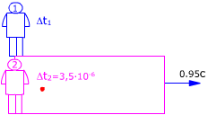
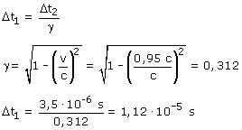

| El rectángulo representa un recinto que se mueve
respecto al observador 1 con velocidad 0.95c
El observador 2 y la partícula están dentro del recinto

Observador 1 (Laboratorio):
Ve la partícula moviéndose con velocidad 0.95c. Midiendo
la duración de su vida obtiene: Δt1
La posición de la partícula al nacer y al morir no es la
misma
Observador 2 (Recinto)
Ve la partícula quieta. Midiendo la duración de su vida
obtiene: Δt2 = 3,5·10-6 s
Este tiempo es propio
Aplicando la conversión de tiempos resulta:

|